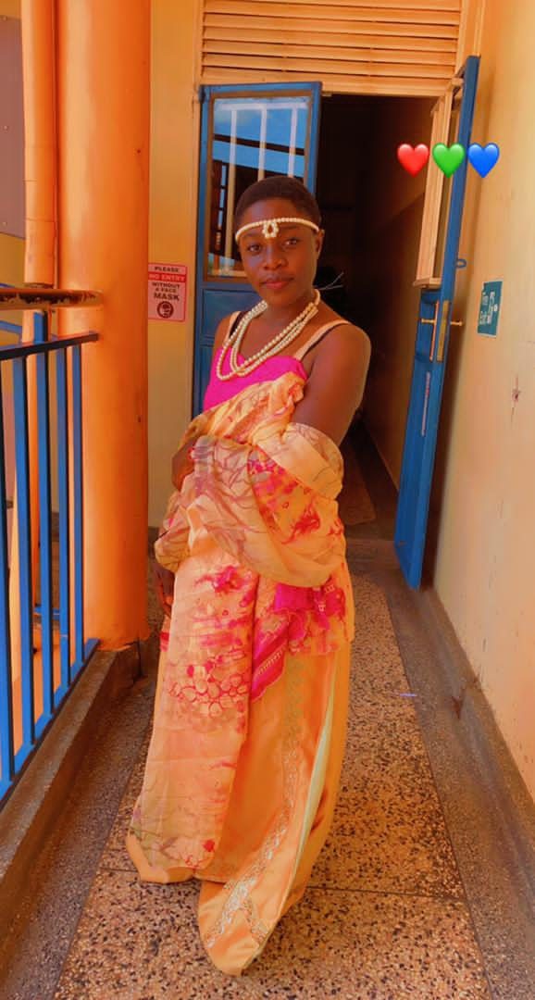
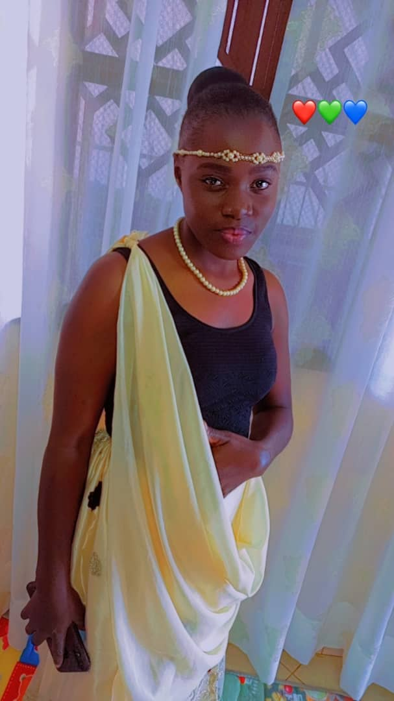
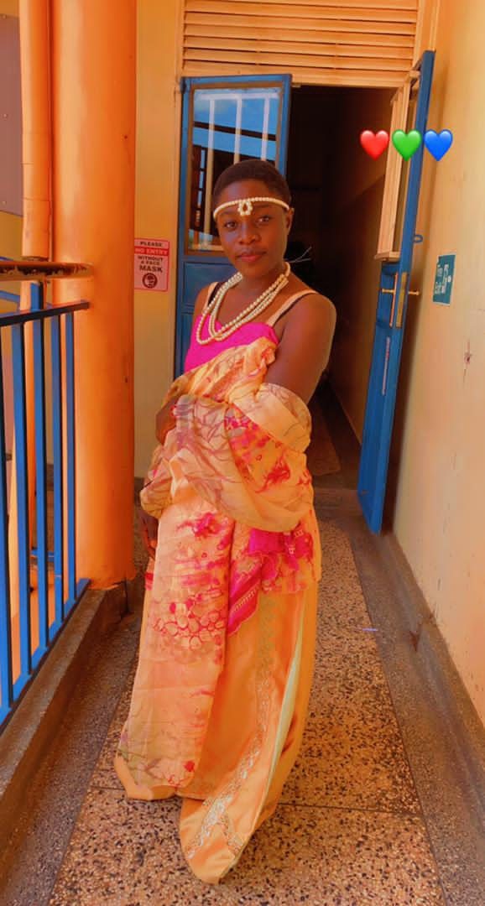
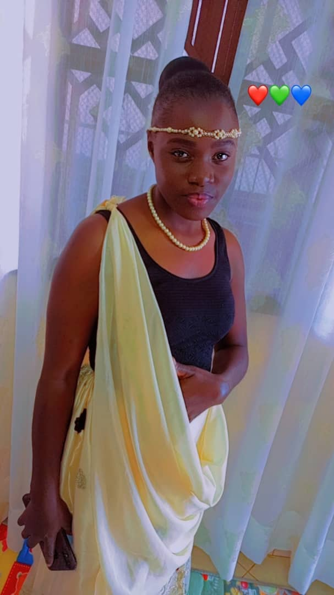
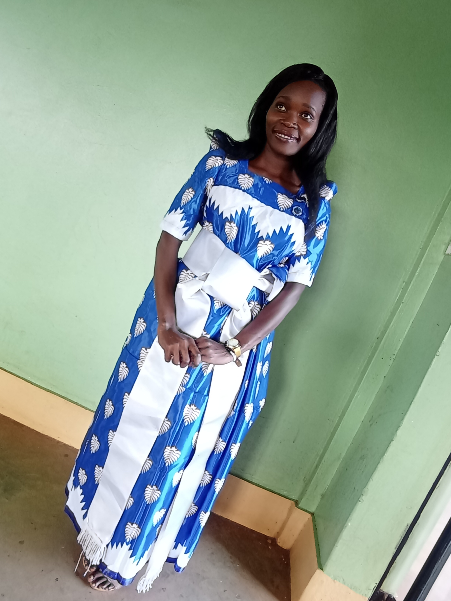

OMUSHANANA
Omushanana; Reffers to traditional Rwandan attire,often worn during
special occassions or ceremonies that hold cultural significance in Rwanda.
This is worn during important events,ceremonies or celebrations.The attire includes
various elements such as colourful fabrics,headwraps,and accessories reflecting the rich
culural heritage of Rwanda.
 



GOMASI
The Gomasi is a distinctive and significant traditional attire worn by Baganda woman in Uganda.
It consists of a floor-length,brightly colored dress with a square neckline and short,puffed
sleeves.The Gomasi is often made from silk or cotton fabric and is adorned with colorful patterns.
The Gomasi holds cultural and social importance for the Baganda people.It is not just a piece of clothing.
It is worn mostlty on important ceremonies.

BABY DRESS
Baby dresses are adorable garments designed for infants and toddlers.They come in various styles,colors,and
materials ranging from simple onesies to more ellaborate dresses for special ocassions.
Baby dress are typically comfortable,easy to put on,and crafted with soft fabrics to ensure the baby's comfort.
They often feature cute prints,patterns,and details to enhance the overall charm.

OUR PAYMENTS.
Our payments are affordable.
We pay according to the designs needed,material and quality.
For example a man who wants Ankara design,the price cant be the same with the one who wants a party dress
depending on the material and the design needed.
At Ted's Fashion Designs your look is our happiness.
Visit TED'S FASHION DESIGNS and you will never regret